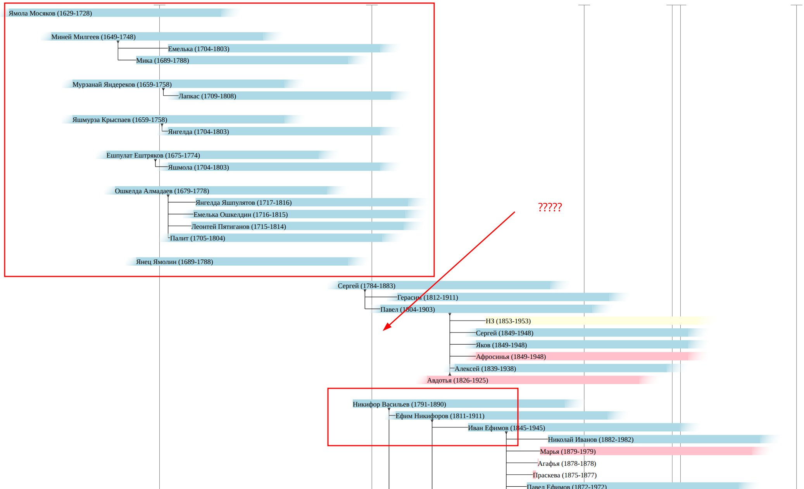

На днях получил некоторые листы по девятой ревизии по моей ветке. Добавил их в дерево. Это позволило опуститься по моим родственникам до конца 18-ого века. Совсем чуть чуть и удастся связать ветку до черемисских имен нулевой и первой ревизии.
Можно предположить, что отца Никифора звали Василий, который родился примерно в 1770-ых годах. А стало быть он должен засветится в четвертой ревизии. У меня есть третья ревизия. Но даже ее читать очень сложно. Скорее всего четвертую надо будет заказывать с расшифровкой.
